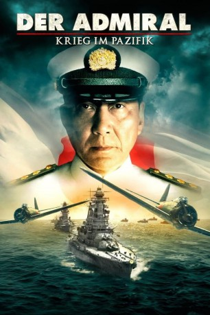

#10821 Der Admiral - Krieg im Pazifik
Alternativ: Isoroku Yamamoto, the Commander-in-Chief of the Combined Fleet (Englischer Titel)
 
 IMDB-Wertung: 6.8 / 10
IMDB-Wertung: 6.8 / 10  Metascore: 0
Metascore: 0 
7. Dezember 1941: Mehr als 350 japanische Kampfflugzeuge starten in den frühen Morgenstunden einen Überraschungsangriff auf den US-Marinestützpunkt Pearl Harbor auf Hawaii. Etwa 2.500 US-Militärangehörige verlieren an diesem Tag ihr Leben. Der Angriff veranlasst die Vereinigten Staaten von Amerika dazu, nun vollständig in den Zweiten Weltkrieg einzugreifen. Admiral Yamamoto, Oberbefehlshaber der japanischen Flotte, ist der führende Kopf hinter dem Überfall auf Pearl Harbor und zahlreicher weiterer Seeschlachten im Pazifik - so zum Beispiel in der Schlacht um Midway. Yamamoto hatte sich lange gegen das Bündnis mit dem deutschen Reich gewehrt und offen gegen einen Krieg mit Amerika ausgesprochen. Dennoch erfüllt er seine Pflicht als Soldat, als er den nächsten Angriffsbefehl erhält.
Jahr: 2011
Dauer: 140 Minuten
FSK: 16
Land: Japan Studio: Pandastorm PicturesTonspuren:
Untertitel: Deutsch,
Auflösung: 1080p (1920x1040) Größe: 13926 MB
Genre: Drama, Krieg, Biographie
Regisseur: Izuru Narushima
Drehbuch: Yasuo Hasegawa, Kenzaburô Iida
Soundtrack: Tarô Iwashiro
Darsteller:
 Kôji Yakusho als Isoroku Yamamoto
Kôji Yakusho als Isoroku Yamamoto- Hiroshi Abe als Yamaguchi tamon
- Yoshihiko Hakamada als
- Mieko Harada als Yamamoto's wife
 Teruyuki Kagawa als Munakata Keikiyoshi
Teruyuki Kagawa als Munakata Keikiyoshi- Nobuko Miyamoto als Yamamoto's mother
- Takeo Nakahara als Nagumo
- Asaka Seto als
 Kippei Shîna als Kuroshima
Kippei Shîna als Kuroshima- Hiroshi Tamaki als Shindo Toshikazu
- Rena Tanaka als Dancer
- Shûichi Azumaya als Yoshimasa Yamamoto
- Mitsugorô Bandô als Hori
- Akira Emoto als Yoneuchi
- Masatô Ibu als Nagano
- Shunji Igarashi als
- Yûsuke Iizuka als
- Jun Itô als
- Hiroki Kobari als soldier
- Takurô Kodama als
- Tôru Masuoka als
- Ikuji Nakamura als Ugaki
- Tetsuo Yamashita als
- Toshirô Yanagiba als Inoue
- Eisaku Yoshida als Yoshida
Datei: X:\HD-Eastern-Modern(A-M)\Admiral - Krieg im Pazifik, Der (2011, FSK16, 1920x1040).mkv seit 09.03.2019
Festplatte: HD Eastern+Western
 Es gibt insgesamt 104 Filme in der Gruppe 'HD-Eastern-Modern(A-M)'
Es gibt insgesamt 104 Filme in der Gruppe 'HD-Eastern-Modern(A-M)'